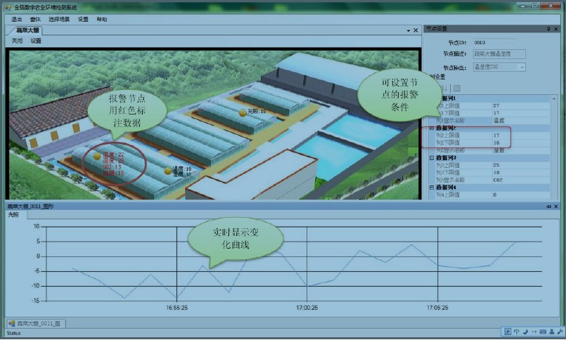

产品介绍
产品介绍
|

|
金脑数字农业环境监测系统 |
“金脑数字农业环境监测系统”是为了应对现代农业逐步向精准化、数字化、科学化发展，由我公司独立开发提供的一款对农作物生长环境进行实时精准监测的软件产品。
本系统提供了包含实时监测、系统管理、查询统计和用户管理等一系列功能，这些功能的组合，形成了“监测->预警->防范->分析”的环境监测管理模式，为农作物的生长环境分析提供重要的依据。
该系统实现的主要功能：实时监测，系统管理，查询统计，用户管理。
1、实时数据监测:
实时监测中的数据实时表示，我们可以提供三种形式的显示--LED形式，曲线形式，图示形式。
实时监测--LED形式
实时监测--曲线形式
实时监测--图示形式
2、实时视频监测:
可以实时监测有摄像设备的大棚，在实时视频监测页中，当用户点击指定的摄像设备，会将该
窗口放大，进行特别监测。在主的页面中可以直接连接到正在实时数据监测的摄像监控，而且
可以追溯历史视频。
3、实时报警:
该系统设定有五级报警，不同的级别报警效果不同，我们使用不同颜色的字体来区分不同的报
警等级，同时用户还可以设定短信报警功能。
 系统管理:
系统管理:
实现了园区管理，区域管理，大棚管理和设备管理等功能。
 查询统计:
查询统计:
1、历史数据的查看和统计
历史数据的查询页面
2、历史报警数据的查看和统计
历史报警数据的查询页面
不同的用户所能够进行的操作不同，同时根据园区的不同，特定的用户只能够看到自己园区的数据。
当不同权限的用户登录时，根据权限能够看到的页面也不相同。
 京公网安备 11010802033138号|京ICP备12010723号
京公网安备 11010802033138号|京ICP备12010723号